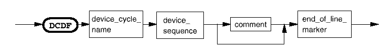

Device cycle
This section defines a device cycle.

device_cycle_name |
Up to 6 alphanumeric characters. Reserved names are not allowed. These are: break, BREAK, c and C. The following characters are also not allowed: # ( ) , ; ? @ and *. |
| device_sequence | The waveform contained in the device cycle. |